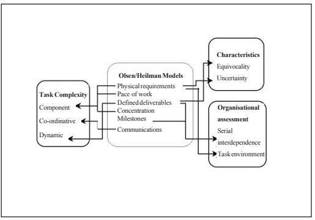
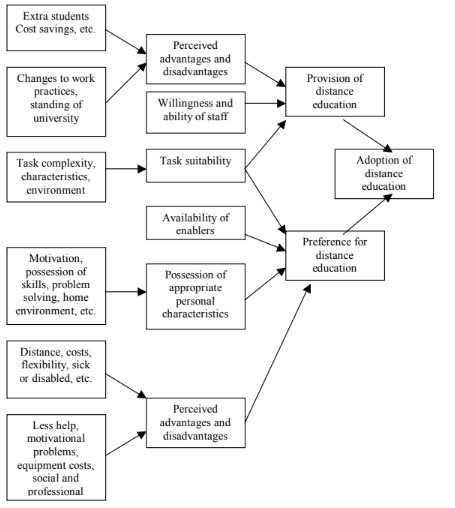

Distance education involves both the student and the instructor in various
tasks associated with learning and testing the absorption of that learning. In
this chapter, parallels are drawn between educational and workplace tasks–
the understanding of prescribed material, assignments, experiences and
acquisition of knowledge on one hand and the components of a job on the
other. It draws on the telecommuting literature as it relates to telecommuting’s
attraction to the worker, the organization and the community, the importance
of the task, the technology required, the role of the supervisor and the
individual attributes one needs to be a successful teleworker. These are
brought together in a model aimed at providing a guide to the possible
adoption of distance education and enabling administrators to assess its
potential and some of the pitfalls that may be encountered.
INTRODUCTION
Distance education, particularly online distance education is attracting
considerable attention from both providers of education and potential students. There are many similarities between this form of education and
telecommuting. From the employer (or provider) perspective, there is the
attraction of a wider pool of potential recruits (read potential students),
savings on facilities and organizational infrastructure, meeting demand and
changing work practices. From a student perspective, the telecommuting
advantages of reduced travel, flexibility and the time to devote to other
commitments (work, family, etc.) are at least initially attractive.
The objective of this chapter is to review the telecommuting literature
and put forward a model that outlines the potential influences affecting the
adoption of distance education for use by academic institutions in their
decisions related to this area. Such a model may be helpful for research into
distance education too.
CHAPTER OVERVIEW
This chapter begins with a review of the benefits, costs and risks
associated with telecommuting (Gray et al., 1993; Turban & Wang, 1995;
Ford & McLaughlin, 1995; Ellis & Webster, 1997) for each of the three
components of the telecommuting arrangement–the individual, the organiza-
tion and the community, and suggests that several of the matters relevant here
have direct relevance to the distance education decision. In essence, these
issues form part of the drives and constraints which need to be present or
absent to some degree for telecommuting to take place. Other drives and
constraints include the suitability of the task, the attitude of the supervisor, etc.
This theme is continued by an examination of the enablers (Mokhtarian &
Salomon, 1994; Tung & Turban, 1996) which provides some insight into the
technological factors that are likely to influence the acceptance and potential
use of this form of education.
Using a theoretical task model to encompass the component, coordina-
tive and dynamic themes of complexity (Wood, 1986), the task characteristics
of uncertainty and equivocality (Daft and Macintosh, 1981) and the organi-
zational issues of resources and scheduling of work (Thompson, 1967), a set
of attributes for educational tasks is developed. It is suggested that this model
forms a central component of an overall model for the evaluation of the
suitability of educational tasks to distance education. In addition the task
model provides a firm basis for consideration of the appropriateness of the
attributes associated with various distance education tasks and the suitability
of those tasks.
Studying and learning from home will require particular student attributes: some familiarity with computing and communications technologies, the ability to organize one’s self, and time management skills are all likely
to help the potential student. These personal attributes of the individual
have parallels in the telecommuting literature too. These are most likely
to be in the areas of personal characteristics such as the ability to get
information required, knowing when advice is needed, the ability to solve
one’s own problems and good self-management (Venkatesh & Vitalari,
1992; Gray et al., 1993; Wheeler & Zackin, 1994; Mokhtarian & Salomon,
1996a) and the home environment (Yap & Tng, 1990; Mannering &
Mokhtarian, 1995).
For many potential telecommuters, the supervisor is an important
figure in the decision to work from home. To some extent the role of the
Professor is analogous with that of the supervisor. As the supervisor
controls allocation, timing and resources for tasks (Starr, 1971), the
Professor controls task content, timing and the required resources. Ac-
cordingly, this literature, as it relates to telecommuting, offers some
assistance in studies of distance education.
Telecommuting literature also provides some pointers to demographic
influences on the preference to telecommute: age, gender, time in the
workplace, job type, education, transport, presence of small children, and the
number of cars in the household (Mokhtarian and Salomon, 1997; Belanger,
1999; Dick and Duncanson, 1999). Some of these seem to have relevance to
the decision to engage in distance education.
The chapter concludes with a discussion of the adoption model proposed,
relating it to a series of issues presently being encountered in distance education.
ADVANTAGES AND DISADVANTAGES
For the Individual
The telecommuting literature (Olson, 1983; Rice, 1987; Ford & Butts,
1991; Gray et al., 1993; Mokhtarian & Salomon, 1994; McQuarrie, 1994;
Turban & Wang, 1995) suggests the following as potential advantages and
disadvantages of telecommuting–each item is discussed with a view to its
applicability to the student undertaking distance education, assuming that
some form of information and communications technology will be used to aid
him in the associated tasks.
The Advantages
- Reasons associated with travel to work, such as reduction in commuting
stress, saving money and time and helping the environment. There is at least some relevance here to distance education; not having to attend
on a regular basis may reduce travel costs for the student, particularly
if long distance travel is involved. In this context it should be noted
that reduction of living costs may be a significant factor for the
potential student. Also, this area might be broadened to include those
for whom travel would be impossible, such as those living abroad or in remote areas.
- Better able to manage one’s own affairs; e.g., more independence,
flexibility, control of the physical working environment, to study or
pursue personal interests. This factor has particular relevance (perhaps
a very strong relevance to the postgraduate student, or the mature-age
student) in the sense of being better able to manage work commitments.
- To be able to work if sick, disabled or to look after a sick child or other
dependent. This potentially increases the possibility of education for
those who may be disabled or extensively involved in the care of
dependent children or other relatives.
- To reduce the stress experienced in the office. Relevant perhaps to those
who might find the campus environment threatening or intimidating.
- To spend more time with one’s family. A similar advantage for distance
education students.
- To get more work done. Campus life offers many distractions for the
student; while these are mostly seen as an advantage, some students may
benefit from the possibility of removing themselves from these distractions. On the other hand, many of the activities available to, and experienced by, undergraduates on campus are part of the getting of
wisdom and their being unavailable may render the educational experience a poorer one.
The potential advantages get generally high exposure in the distance
education literature: accessibility, convenience, international (or recognized)
instructors and a “consumer orientation” (Alavi et al., 1997; Emmons, 1999),
allowing students to remain in a familiar environment, and the possibility of
advancing the emergence of global software development and discussion
(Passerini & Granger 2000), and the ability to continue education or keep up
to date while having only limited time available due to heavy work commit-
ments (Jana, 1999; Boisvert, 2000).
The Disadvantages
- More difficult to work at home due to less help available, motivational
problems, increased family conflict and distractions. One might expect
these to be serious impediments to distance education for many people, requiring particular personal attributes for them to be overcome.
- Viewed negatively by management, being “out of sight and out of mind.”
If we interpret “management” to mean faculty, there could well be a
feeling among distance students that those with physical access to the
faculty and university resources get enhanced help and assistance.
- Exploitation by management–missing out on overtime or having to work
extra time to cover peak periods. “Management” in this sense could be
interpreted as the university administration that supplies resources and
occasional casual work to supplement student incomes.
- Travel time can be used productively, to run errands, or provide a break
between home and the office. Travel is seen as a time for completing
assignments, reading, study, etc.
- The office is nicer/better equipped than a home office would be. A
significant issue for potential distance students may be the need to equip
a home study area with a PC and appropriate software, telephone line and
communications software, although there is a recent move among
University administrations to require students to purchase laptops and
the appropriate software.
- The social interaction found at the conventional workplace and missing
out on the extracurricular activities that take place on campus could be
viewed by many as serious disadvantages to distance education.
- The professional interaction found at the conventional workplace–
getting to know one’s fellow students, easy access (formal and informal)
to faculty. At a more strategic level, a diminished educational experience
may result.
Many of these potential disadvantages are echoed in the distance education literature to date. There is broad support for the notion that an educational
program is far more than a curriculum and that there are benefits from a
“surround interaction” between the students, the instructor and the lectures.
This rich variety of interaction is likely to be lost (Bertagnoli, 2001). Others
include not learning the skills to think on one’s feet, the absence of support
and help, longer to develop a rapport between student and Professor and cost
issues related to tuition and technology (Emmons, 1999). Attempts to
measure satisfaction with distance education have been sporadic, other than
the measure of enrollments and the growth in the number of institutions
offering some form of distance education. One recent approach using the
service industry as a base (Long et al., 2000) based the assessment largely on
immediate application in the workplace—not an invalid measure, but perhaps
only one of many.
For the Organization
Advantages to the organization from telecommuting normally center
around productivity, better use of an employee’s time, a wider pool of recruits
on which to draw, saving on conventional office space and an extension of
working hours (Katz, 1987; DuBrin, 1991; Gray et al., 1993; Hamblen, 1999).
Similar advantages could accrue to universities offering distance education.
Increasing staff workloads and the ability to offer courses outside conventional hours may appeal to university administrations; the wider pool of
students, with the associated revenue (Keohane, 2000) is already seen as a
major driving force; there could also be savings in lecture halls, tutorial
rooms, laboratories and other on-campus facilities. Indeed there is evidence
that this is already happening (Chellappa et al., 1997; Kirk & Bartelstein,
1999; Bertagnoli, 2001). In addition, there is at least circumstantial evidence
that computer-based learning is less costly than classroom instruction (Mottl,
2000).
Disadvantages of telecommuting from an organizational perspective are
largely to do with changing the way organizations work and function,
duplicating equipment costs, absence of key personnel from the conventional
workplace, morale problems and security (Ford & Butts, 1991; Filipczak,
1992; Li & Gillespie, 1994; Tamrat et al. 1996; Orlikowski, 1996; Dick &
Duncanson, 1999). Re-skilling faculty (not just those who are keen to
experiment with technology) and changes to more traditional ways of teaching may present significant problems. There will be additional costs (Herther,
1997) in supporting students’ online access, and the absence of students from
the conventional classroom may diminish the teaching standing of the
university, due to the potential reduction in the student-professor interaction.
Research may suffer too, due to the high demands of distance education in
course preparation, rewriting and overhead associated with student contact
(Chan, 1999).
Again distance education literature suggests that university administrations are already trying to cope with these issues (Theakston, 1999). The
standing of the course is a matter for serious concern. A not uncommon
perception of distance education is that it is a lesser experience and of lesser
academic standing, partly as a result of it largely being offered by low-quality
correspondence schools in the past (Emmons, 1999). While the analogy of
takeout Chinese food compared with a restaurant dinner (Kling, 2001) seems
a little unkind, this remains an issue for university administrations.
For the Community
Potential reduction in the demand for transport infrastructure, reduction
in pollution and benefits to local or rural communities are often cited as
possible effects of telecommuting (Blanc, 1988; Mokhtarian et al., 1995;
Nilles, 1996). There is some scope for these benefits from distance
education; perhaps the most significant may be the reduction in the
subsidies required for public transport. As a rather bizarre example of the
attraction of such an issue, there was a move after the Olympic games in
Sydney to remove the stands at either end of the Olympic stadium, thereby
reducing its capacity (empty seats do not look good on television), a move
supported by the State Government as each person travelling to and from
the stadium involves a public transport subsidy.
Another potential benefit to some communities and institutions is that the
provision of distance education may provide the opportunity to leapfrog more
established universities and colleges with their established (and perhaps
difficult to change) infrastructure, in distance education, all institutions are on
the starting blocks (Gregg, 1997).
Against this, business activity in the city centres and university towns
may fall, travel may increase in outlying areas, and energy consumption in the
home may rise (Gray et al., 1993).
ENABLERS
There is a long list of electronic enablers that facilitate telecommuting:
PCs and laptops, printers, modems, copiers, fax machines, cellular telephones, answering machines, high-speed communications links and access to e-mail and the Internet (Hotch, 1993; Tung & Turban, 1996).
While clearly not all are required for all tasks, this list is a useful starting
point for the types of electronic assistance that would facilitate online
distance education. At present much of this equipment is made available
free of charge to students in the traditional campus environment. Considerable expense would be incurred by the student in equipping himself with
such technology. On the other hand many universities expect students to
have such technology available at home.
TASK SUITABILITY
The following model, constructed from the telecommuting and task
literature, outlines various aspects of task properties that make a task suitable
for telecommuting.
Figure 1: A task model

Based on original models of task suitability for telecommuting (Olson,
1983; Huws et al., 1990), the model suggests support for these properties from
the task-related literature.
The original telecommuting models suggested that tasks may lend
themselves to telecommuting if:
- physical requirements (for resources and equipment) are kept to a
minimum,
- the staff member is in a position to control the pace of his work,
- the work has defined deliverables,
- the work required concentration,
- the work has specific milestones set, and
- there is minimal need for communications with one’s supervisor or
fellow employees.
There are obvious parallels here to those tasks that are likely to be part of
distance education: assignment writing, research, understanding course notes
and lecture material, and examination preparation.
In general terms, as the degree of task complexity rises, the task becomes
less suitable (or more difficult) for telecommuting (Wood, 1986). The same
may be said of distance education. Component complexity is a function of the
number of distinct acts that are required to perform the task and the number
of information cues to be processed in performing these acts. Component complexity is also affected by the task being dependent on completion of other tasks. The type of task may have relevance here too. Some concepts may be difficult to explain or demonstrate without “hands on” experience, for
example, dissection, modeling and instrument operation. Coordinative complexity refers to the form and strength of relationships and the sequence of
inputs. Wood suggests that the more complex the timing, frequency, intensity
and location requirements, the greater the knowledge and skill the individual
must have to be able to perform the task. Changes in the acts and information
required or in the relationships between inputs and products, Wood calls
dynamic complexity; an example could be a change in the desired output due
to variations requested by a client. This too can create shifts in the knowledge
or skills required.
To illustrate the potential impact of task complexity in a distance
education environment, if we consider component complexity, tasks with
minimal component complexity may be those such as reading a study guide,
notes or a textbook and answering a series of “review” questions. At the other
end of the scale, research using multiple resources, including hard copy and
electronic journals, textbooks and the Internet, discussions with a colleague
and writing up a summary of the research may present difficulties for the
distance education student. Likewise coordinative complexity could range
from one person completing an assignment, to working as part of a team with
each member responsible for various components and then the team having
to link them together to produce a final product.
Distance education today is largely conducted in an asynchronous mode
(it does not require the students to be working together either at the same
location or at the same time). This is part of its attraction in that this flexibility
answers the drive of being better able to manage one’s own affairs and
commitments. However, where coordinative complexity is concerned, one
person’s time to complete a task may not suit another. Consider the case
(typically used in IS courses) of building a web site and sending it to another
student to critique before submitting it for grading. In the campus environment, many classmates could undertake the critiquing task if one’s first choice
was unavailable immediately. The student in a distance education environment may wait several days to discover his colleague is away, unable to master
the technology required, or simply hasn’t read his email. By this time, the
assignment may be late, incurring penalties, etc.
Another example (again from the IS environment): one team member
may develop program specifications, two or three others do the programming,
and another tests the finished product. Software, hardware, and understanding
another’s work all become more difficult to manage at a distance, requiring
extra overhead in management and control of the task.
The above examples illustrate a potential danger. In order to have such
courses available for distance education and in an attempt to overcome such
obstacles the instructor may be tempted to omit such coordinatively complex
tasks from the course, meaning a lesser education experience may result.
The task characteristics of equivocality (ambiguous meanings or
instructions) and uncertainty (about what is required or how to go about
it) are also particularly relevant to tasks involved in distance education
(Daft & Macintosh, 1981; Daft et al., 1987). Considerable difficulty might
be expected to be experienced by the student if tasks are not clearly
explained with out ambiguity and specified to reduce uncertainty. In such
an environment, a student may easily become frustrated and annoyed and
may be more willing to question the value added by the instructor. There
is a fine line to tread here. On one hand the course has to be challenging
and enable the student to develop his skills and knowledge to their full
potential. On the other hand, in the campus environment, many tasks are
developed and modified on the fly (Kling, 2001) and give the instructor
the opportunity to modify tasks for a particular student by changing
requirements. If students are having trouble locating a particular resource,
for example, the instructor may suggest alternatives or make it available
by another means. Many assignments are set in such a way as to encourage
the student to explore one of several options. Such amendments and
vaguely worded assignments, without the likelihood of immediate remedy, can cause significant problems in the distance education environment and lead to the frustration and annoyance mentioned above.
In the campus environment too, the student enjoys access to a range of
support groups of which the professor is only one part. Other groups include
past students living in the college, current colleagues the student has established relationships with due to class contact, and formal administrative
support groups such as counseling and tutorial services. All of these might be
expected to be less readily available to the distance student. This requires the
professor to be particularly careful in setting work and may influence the
standard of such work.
Similarly, the environment in which the tasks take place (Thompson,
1967) may have some relevance to their suitability. Serial dependence refers
to the need to wait on others (professor or student) in order to commence or
complete one’s own work. Also relevant is the degree of “networking” and
team building that educational tasks are designed to include.
PERSONAL ATTRIBUTES
Successful telecommuters display certain traits (Gray et al., 1993).
According to the authors, these traits are:
- the ability to make sound decisions, know where to get the information
that leads to the decision-making process or the completion of the task
and to know when they need advice;
- the ability to solve their own problems. This might require a knowledge
of the organization, the tasks or the technology and an analytical
approach to problem solving; and
- good self management; i.e., self motivation, time management, the
ability to assess their own work and to be able to put these skills together
to deliver quality work on time.
There is considerable support for these traits in the literature (see also,
Venkatesh & Vitalari, 1986; Mokhtarian & Salomon, 1996b; Lewis, 1998).
Confidence in working within the electronic community may also be an
important attribute (Venkatesh & Vitalari, 1986; Hesse & Grantham, 1991;
Trevino & Webster, 1992). The telecommuter is isolated from “help” and runs
the risk of being seen as incapable of working with the required tools or being
seen as incompetent if he/she does not hold the necessary skills.
Other aspects identified in various studies by Mokhtarian and others
include the need for self discipline, household interaction problems, and
aversion to risk (Mokhtarian & Salomon, 1994), susceptibility and aversion
to stress (Mokhtarian & Salomon, 1997; Trent et al., 1994) and the desire to
get more work done (Mokhtarian et al., 1994).
For the distance student, knowing where to get relevant information and
when to seek advice would seem to have particular importance, as does the
ability to solve his own problems: The added reliance on information
technology and communications equipment gives this aspect added weight.
Undergraduates are perhaps more likely, than their postgraduate counter-
parts, to have motivational problems and will need to develop time manage-
ment skills to enable work of an appropriate quality to be delivered on time.
On the subject of the household environment, the telecommuting issues of
presence of small children, number of people in the household and family
orientation may also have some effect on the preference to undertake
education at a distance (Mannering & Mokhtarian, 1995).
THE SUPERVISOR
The supervisor has an enigmatic role in telecommuting. On one hand,
without the supervisor’s approval of individual instances, telecommuting is unlikely to take place, while on the other, the attitude of the supervisor does
not seem to affect the preference to telecommute (Dick, 2000). Nevertheless,
if we align the role of the supervisor with that of the professor, some issues
do arise. It has already been noted that one of the disadvantages of
telecommuting to the organization relates to changes in the way of working.
Faculty will need to learn new skills, particularly IT-related ones. They will
need to be prepared to “formalize” presentations and the learning experience
imparted to a considerable degree and to correspond with students by the,
perhaps unfamiliar media of email, “chat rooms” and “bulletin boards.” These
changes will not be easy and are likely to involve universities in considerable
upheaval.
AN ADOPTION MODEL
The above suggests that the following model (Figure 2) may be useful in the evaluation of online distance education as an alternative for students and
universities. The model is an attempt to identify the various influences on the
possible acceptance of online distance education by universities, staff and
students. As such it may provide some assistance to those evaluating the
provision of distance education as a viable model, an understanding to those
considering undertaking distance education of the issues, pitfalls and attractions involved, and potential researchers with a body of literature from a
related field adapted to the topic.
CONCLUSION
Many education institutions are considering, or have already implemented,
distance education programs, using some form of online delivery.
There is some temptation for academic institutions, attracted by the
possibility of dramatically increased student numbers (often paying full fees),
the apparently relatively easy conversion of current lecture material into
online study guides, and a proliferation of software for online teaching to
follow a “build it and they will come” approach. This is not likely to work.
So what can we learn to help in distance education from the telecommuting
research? First, it should be noted that there are a complex set of factors that
work together in consideration of such programs. This means that distance
education is not likely to be suitable (or even attractive) to all; some courses
and some components of courses are not likely to be suitable to distance
education, and distance education may not be suitable for an entire educational program.
Figure 2: An adoption model

There seems little doubt that much academic work will be
modified from the campus environment in its translation to the distance
education one. Several possibilities arise here. One, there will be a proliferation of institutions offering low-quality tertiary education, much of which
would be better offered as online training. Two, the large start-up costs
associated with establishing any form of distance education will be lost as
students eventually shy away from degrees “that everybody passes.” Three,
for the better administered and developed courses, faculty will be required to put in considerable extra effort to make the course available in a distance
mode, which at least in the short term may mean less research and a lower
academic standing for the university.
Modification to the work practices of faculty and the tasks to be
completed by students will not come without some disruption to the university
environment. In the long term it is possible that these changes may be for the
good; however, telecommuting research would suggest that the programs will
work best where they fit neatly into current organizational work practices and
match student desires and abilities.
The varying approaches to telecommuting over the last 20 years and
the way these approaches have been modified by such things as careful
selection of telecommuters, the recognition that full-time telecommuting
is often not good practice, and the modification of work practices to
accommodate telecommuting suggest that careful planning and an evalu-
ation of all of the factors involved will be required for any measure of
success to be achieved.
Research on these programs is just beginning. There is a need for the
evaluation of such programs against a sound research model. An important contribution of this chapter is to bring the telecommuting-related
literature together in a manner that allows the development of a preliminary research model for studies of the provision of distance education
from the educational institution perspective and for the desire to partake
in distance education from an individual perspective. The model brings
together the tasks (and the related issues of scheduling and control of
work), personal characteristics of the individuals, the perceived advantages and disadvantages of undertaking a course of study in this way and
the necessary underlying technology.
An important element in any form of education is the partnership
between the instructor (or professor) and the student. On the face of it, the
imposition of any form of technology between these two partners is likely
to erect a barrier rather than facilitate learning. Accordingly, technologies
and procedures must be found and implemented that enhance the learning
experience.
REFERENCES
Alavi, M. A., Yoo, Y. and Vogel, D. R. (1997). Using information technology
to add value to management education. Academy of Management
Journal, 40(6), 1310-1333.
Belanger, F. (1999). Workers’ propensity to telecommute: An empirical study. Information and Management, 35, 139-153.
Bertagnoli, L. (2001). Education reservation. Marketing News, 35(4), 4.
Blanc, G. (1988). Autonomy, telework and emerging cultural values. In
Korte, W. B., Robinson, S. and Steinle, W. J., (Eds.), Telework: Present
Situation and Future Development of a New Form of Work Organization, 189-200. Amsterdam: Elsevier Science Publishers. B.V. (North
Holland).
Boisvert, L. (2000). Web-Based Learning: The anytime, anywhere class-
room. Information Systems Management, 17(1), 35-40.
Chan, Y. E. (1999). Creating Canada’s first privatized MBA program.
Academy of Management Executive, 13(2), 100-105.
Chellappa, R., Barua, A. and Whinston, A. B. (1997). An electronic infrastructure
for a virtual university. Communications of the ACM, 40(9) 56-58.
Daft, R. L., Lengel, R. H. and Trevino, L. K. (1987). Message equivocality,
media selection and manager performance: Implications for information
systems. MIS Quarterly, 355-366.
Daft, R. L. and Macintosh, N. B. (1981). A tentative exploration into the
amount and equivocality of information processing in organizational
work units. Administrative Science Quarterly, 26, 207-224.
Dick, G. N. (2000). Telecommuting in Australia and Singapore. Proceedings
of The Fifth International Workshop on Telework. Stockholm.
Dick, G. N. and Duncanson, I (1999). Telecommuting: Does it work in the
long term?. Proceedings of the 32nd Hawaii International Conference
on System Sciences, January, Hawaii. IEEE.
DuBrin, A. J. (1991). Comparison of the job satisfaction and productivity of
telecommuters versus in-house employees: A research note on work in
progress. Psychological Reports, 68, 1225-1234.
Ellis, T. S. and Webster, R. L. (1997). Information systems managers’
perceptions of the advantages and disadvantages of telecommuting: A
multivariate analysis. Proceedings of the 30th Hawaii International
Conference on System Sciences, Hawaii, IEEE.
Emmons, N. (1999). E-Degrees. Legal Assistant Today, January-February.
Filipczak, R. (1992). Telecommuting: A better way to work?. Training, 53-61.
Ford, R. C. and Butts, M. A. (1991). Is your organization ready for
telecommuting?. SAM Advanced Management Journal, 56, 19-23.
Ford, R. C. and McLaughlin, F. (1995). Questions and answers about
telecommuting programs. Business Horizons, 38, 66-72.
Gray, M., Hodson, N. and Gordon, G. (1993). Teleworking Explained. New
York: John Wiley & Sons.
Gregg, J. (1997). As ‘distance learning’ takes off, US lags behind, Christian Science Monitor, 89(121), 19.
Hamblen, M. (1999). Merrill trains staff to work at home. Computer World
33(17), 50.
Herther, N. K. (1997). Distance learning and the information professional.
Online, September-October, 63-72.
Hesse, B. W. and Grantham, C. E. (1991). Electronically distributed work
communities: Implications for research on telework. Electronic Networking: Research, Applications and Policy, 1.
Hotch, R. (1993). Managing from a distance. Nation’s Business,81(10), 24-26.
Huws, U., Korte, W. B. and Robinson, S. (1990). Telework: Towards the
Elusive Office, Chichester: John Wiley & Sons.
Jana, R. (1999). Getting the Most Out of Online Learning. September 13, 119.
Available on the World Wide Web at: http://www.infoworld.com.
Katz, A. I. (1987). The management, control and evaluation of a telecommuting
project: A case study. Information & Management, 13, 179-190.
Keohane, N. O. (2000). Going the distance. Educause Review, 35(4), 10.
Kirk, E. E. and Bartelstein A. M. (1999). Libraries close in on distance
education. Library Journal, 1, April.
Kling R. (2001). Education Reservation. In Bertagnoli, L. (Ed.), Marketing
News, 35(4), 4.
Lewis, B. J. (1998). Tapping into the benefits of telecommuting. Journal of
Management in Engineering, 14, 9-10.
Li, F. and Gillespie, A. (1994). Team telework: An emergent form of work
organization. In Baskerville, R., Smithson, O., Ngwenyama, O. and
DeGross, J. I. (Eds.), Transforming Organization with Information
Technology, 397-418. Amsterdam: Elsevier Science Publishers (North
Holland).
Long, P. D., Tricker, T., Rangecroft, M. and Gilroy, P. (2000). Satisfaction
with distance education: Evaluation of a service template. Total Quality
Management,11(4-6), S530-S536.
Mannering, J. S. and Mokhtarian, P. L. (1995). Modeling the choice of
telecommuting frequency in California: An exploratory analysis. Technological Forecasting and Social Change, 49, 49-73.
McQuarrie, F. A. E. (1994). Telecommuting: Who really benefits?. Business
Horizons, 37, 79-83.
Mokhtarian, P. L., Handy, S. and Salomon, I. (1995). Methodological issues
in the estimation of the travel, energy and air quality impacts of
telecommuting. Transportation Research A,29A, 283-302.
Mokhtarian, P. L. and Salomon, I. (1997). Modeling the desire to telecommute:
The importance of attitudinal factors in behavioural models. Transportation Research A, 31, 35-50.
Mokhtarian, P. L. and Salomon, I. (1996a). Modeling the choice of
telecommuting 2: A case of the preferred impossible alternative. Environment and Planning A, 28, 1859-1876.
Mokhtarian, P. L. and Salomon, I. (1996b). Modeling the choice of
telecommuting 3: Identifying the choice set and estimating binary
choice models for technology-based alternatives. Environment and
Planning A, 28, 1877-1895.
Mokhtarian, P. L. and Salomon, I. (1994). Modeling the choice of telecommuting:
Setting the context. Environment and Planning A, 26, 749-766.
Mokhtarian, P. L., Salomon, I., Saxena, S., Sampath, S., Cheung, P., Le, K.
and Bagley, M. N. (1994). Adoption of Telecommuting in Two California State Agencies. unpublished work.
Mottl, J. N. (2000). Distance Learning. January 3, 75-78. Available on the
World Wide Web at: http://www.informationweek.com.
Nilles, J. M. (1996). What does telework really do to us?. World Transport
Policy and Practice, 2, 15-45.
Olson, M. H. (1983). Remote office work: Changing work patterns in space
and time. Communications of the ACM, 26, 182-187.
Orlikowski, W. J. (1996). Improvising organizational transformation over
time: A situated change perspective. ISR 7, 63-92.
Passerini, K and Granger M. J. (2000). Information technology-based
instructional strategies. Journal of Informatics Education and Research, 2(3), 37-44.
Rice, R. E. (1987). Computer-mediated communication and organizational
innovation. Journal of Communication, 37, 65-94.
Starr, M. K. (1971). Management: A Modern Approach, New York: Harcourt
Brace Jovanovich.
Tamrat, E., Vilkinas, T. and Warren, J. R. (1996). Analysis of a
telecommuting experience: A case study. Proceedings of the 29th
Annual Hawaii International Conference on System Sciences, Hawaii, USA.
Theakston, C. (1999). How technology might aid distance-learning MBA
students: Using Durham University Business School as a case-study.
International Journal of Information and Management, 19, 413-417.
Thompson, J. D. (1967). Organizations in Action: Social Science Bases of
Administrative Theory, New York: McGraw-Hill.
Trent, J. T., Smith, A. L. and Wood, D. L. (1994). Telecommuting: Stress and
social support. Psychological Reports, 74, 1312-1314.
Trevino, L. K. and Webster, J. (1992). Flow in computer-mediated communication: Electronic mail and voice mail evaluation and impacts. Communication Research, 19, 539-573.
Tung, L. L. and Turban, E. (1996). Information technology as an enabler of
telecommuting. International Journal of Information Management, 16,
103-117.
Turban, E. and Wang, P. (1995). Telecommuting management: A comprehensive overview. Human Systems Management, 14, 227-238.
Venkatesh, A. and Vitalari, N. P. (1992). An emerging distributed work
Arrangement: An investigation of computer-based supplemental work
at home. Management Science, 38, 1687-1706.
Venkatesh, A. and Vitalari, N. P. (1986). Computing technology for the
home: Product strategies for the next generation. Journal of Product
Innovation Management, 3, 171-186.
Wheeler, M. and Zackin, D. (1994). Telecommuting. Work-Family Roundtable,
4, 2-14.
Wood, R. E. (1986). Task complexity: Definition of the construct. Organizational Behaviour and Human Decision Processes, 37, 60-82.
Yap, C. S. and Tng, H. (1990). Factors associated with attitudes towards telecommuting. Information & Management, 19, 227-235.
APPENDIX: CONCEPTS AND TERMS
| Telecommuting |
Normally working from home, but may include working from a site
office or community centre, using some form of telecommunications
and computing equipment to communicate with one’s colleagues and
the normal work place. |
| Drives and Constraints |
Telecommuting can be attractive to some, unattractive to others. The
strength of the presence of the “drives” (eg. to be better able to
manage one’s own affairs) and the weakness of potential constraints
(eg. the difficulty of working from home) affect the desire for
telecommuting. |
|
Task suitability |
A complex relationship between task complexity, task characteristics
and the organisational environment in which the task is performed, in
order to determine its suitability for telecommuting. |
|
Personal attributes |
Not all people make suitable telecommuters – telecommuting
demands skills such as time management and the ability to make
decisions, seek out information and be self-reliant. |
| Relationship to distance education |
Distance education uses many of the same technologies and has
similar drives and constraints to telecommuting. There are
similarities in the tasks performed (at least at a theoretical level) and
in the personal attributes required. Prima facie many of the lessons
learnt in telecommuting have relevance to distance education
programmes. |